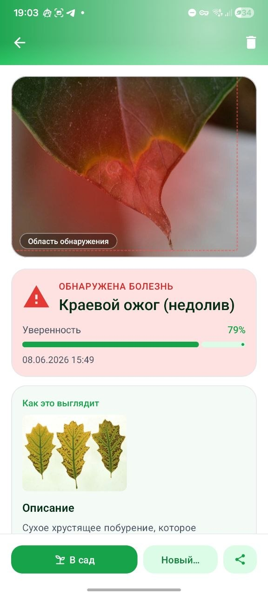
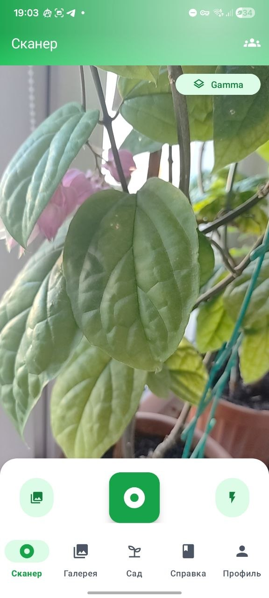
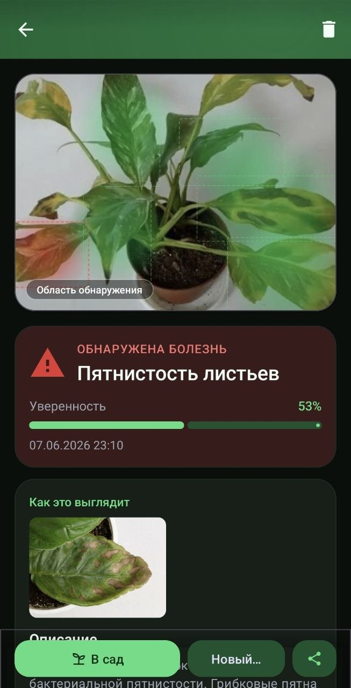
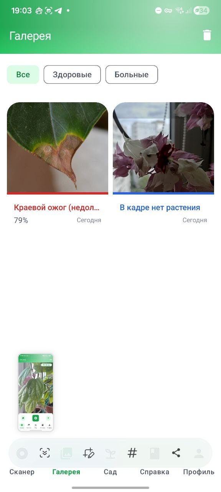
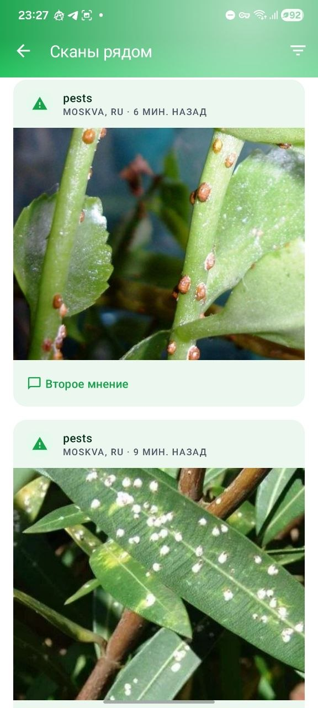
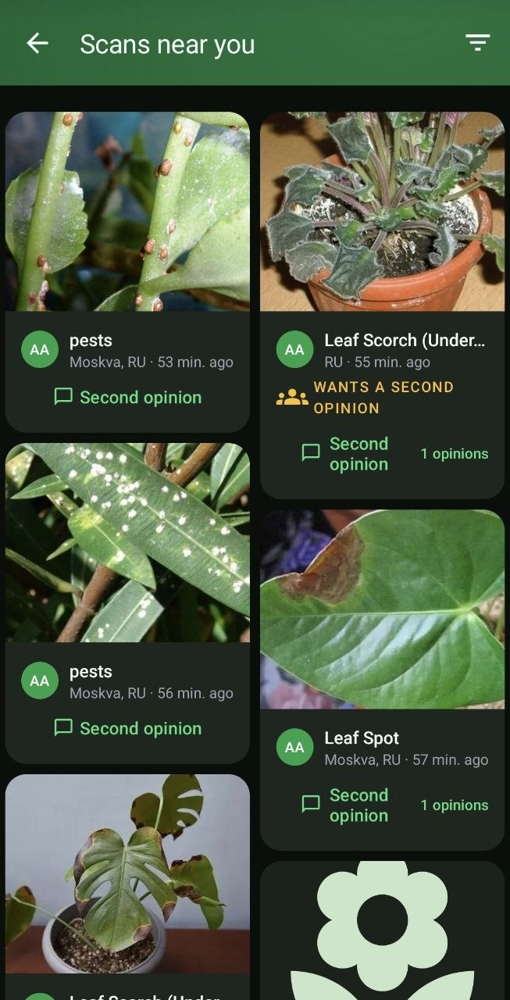

Наведи камеру на лист — получишь диагноз за секунды и понятный план ухода. ИИ-фитопатолог в кармане.
PlantVision 2.5.0 · DINOv2 ViT-S/14 + LoRA · 9 классов

Любитель — не агроном. Симптомы похожи, а интернет даёт противоречивые советы. Растение успевает погибнуть, пока идёт спор на форуме.
Пятна, краевой ожог и дефицит питания выглядят почти одинаково на телефонном фото.
Десятки форумов, противоречивые диагнозы и потерянное время вместо лечения.
История наблюдений, уход и напоминания живут в разных местах — или нигде.
Камера или галерея — наводишь и снимаешь. Детектор сам находит лист в кадре.
→Классификатор на 9 классов болезней и состояний с честной оценкой уверенности.
→Лечение, профилактика, график полива, подкормки и влажности — на двух языках.
Каждый экран сделан так, чтобы провести человека от снимка до здорового растения.
Живая камера на CameraX. Выбираешь семейство модели прямо на экране — облачную Gamma или офлайн-Aqua. Фильтр размытия отсекает нечёткие кадры до того, как они получат фальшивую уверенность.
Класс болезни, уверенность в процентах, подсвеченная область обнаружения, эталонные фото «как это выглядит» и описание. Внизу — кнопки «В сад» и «Новый скан».


Личный сад на Room хранит растения, сканы и заметки вместе. Напоминания о поливе и подкормке приходят через WorkManager. Галерея фильтрует историю на «здоровые / больные». Справка — двуязычная база болезней, вредителей, полива и света.
Лента похожих сканов поблизости — что болеет у соседей в этом сезоне. Можно попросить «второе мнение» по своему скану и получить ответы сообщества. Приватность по умолчанию: только грубый регион (город, страна), никаких сырых GPS-координат, и опт-аут в любой момент.


Опциональный чат (OpenRouter), привязанный к диагнозу твоего скана — задавай уточняющие вопросы по лечению.
по ключу APIИнтеграция PlantNet автоматически подставляет вид растения по фото скана — уход становится точнее.
по ключу APIСравнение сканов во времени: вердикт «лучше / хуже / стабильно» и спарклайн тяжести по 5 точкам.
К каждому диагнозу — описание, чек-лист лечения, профилактика, график полива/подкормки/влажности и список тревожных признаков.
Модель Aqua (TFLite INT8, ~6 МБ) скачивается с сервера и кешируется — диагноз без интернета.
Топ-3 альтернативы, конформные множества, мягкие предупреждения (размытый кадр, спорный «здоров», конфликт детектора).
Двухэтапный конвейер: YOLOv8n находит лист и отдаёт плотный кроп, а замороженный DINOv2 ставит диагноз. Так классификатор видит лист, а не всю комнату.
Gamma — измерено и работает в проде. Aqua и Frontier — проекции, подтверждаемые обучением соответствующего тира.
Оценка тира gamma на отложенной выборке реальных фото (val_realworld) — не студийный датасет.
Живые графики из отчёта об оценке — наведи курсор на любой элемент, чтобы увидеть точные значения.
Доля строки · строки — истинный класс, столбцы — предсказание. Сильная диагональ значит, что классы почти не путаются.
Точность / полнота / F1 на реальных фото (val_realworld).
Бутстрэп n=1937 · широкий интервал = узкое место по данным, не по архитектуре.
Разрыв показывает обобщение на «садовые» снимки.
«Либо X, либо Y» с гарантией покрытия — честная неопределённость.
Все графики построены нативно в браузере из данных отчёта об оценке PlantVision 2.5.0 · gamma.
Отсекает посторонние кадры вместо ложного диагноза.
Топ-3 альтернативы с гарантией покрытия ≥ 90%.
Нечёткие кадры сразу отправляются на пересъёмку.
Нет перекоса в «здорово» — болезни не маскируются.
Kotlin-клиент: камера, история, напоминания и офлайн-инференс.
FastAPI-сервис: двухэтапный конвейер, калибровка и графы метрик.
/api/analyzeФото → двуязычный диагноз (family=aqua|gamma|frontier)/api/care-planГрафик полива / света / влажности + чек-лист лечения/api/progressionСравнение сканов → тренд + спарклайн тяжести/api/identifyОпределение вида (PlantNet, graceful)/api/chatИИ-фитопатолог (OpenRouter, graceful)/api/capabilitiesДоступность семейств aqua / gamma / frontier/api/aqua/modelОфлайн-модель TFLite для скачивания на устройствоОткрытый исходный код · общественное достояние (Unlicense)